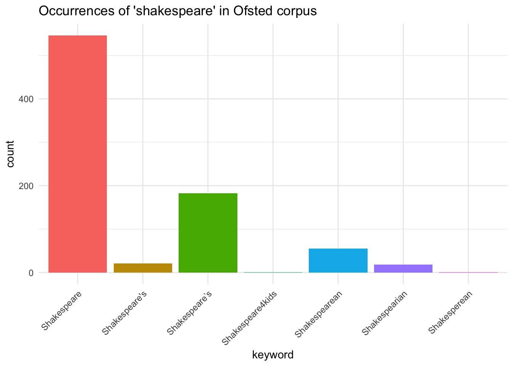
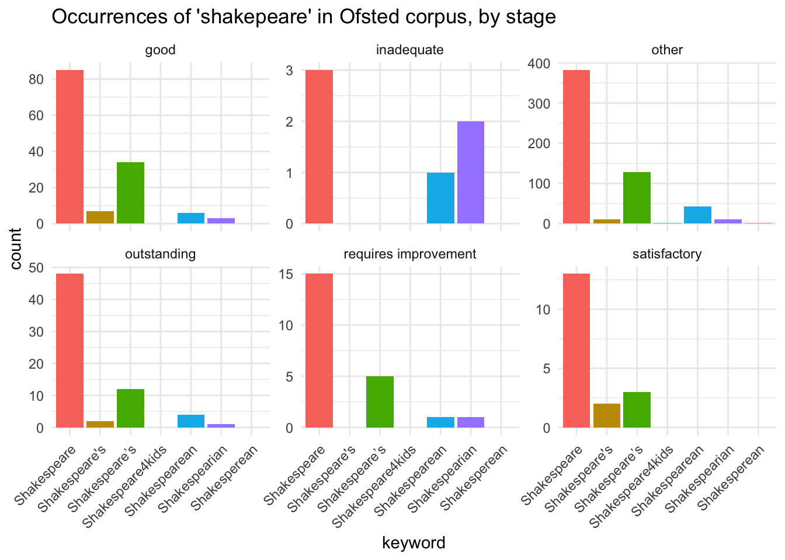
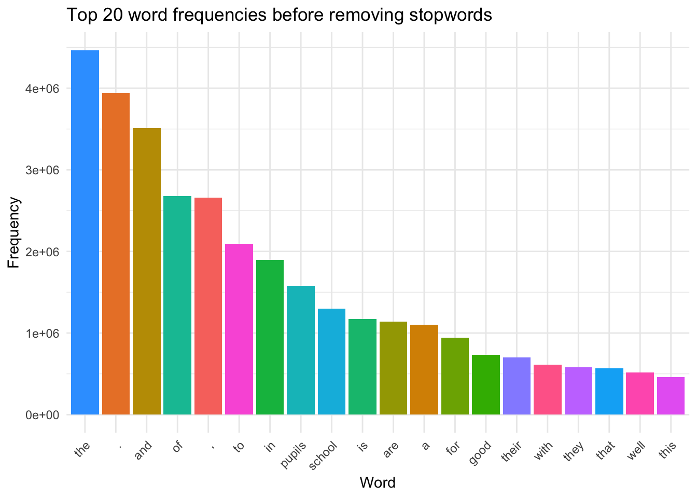
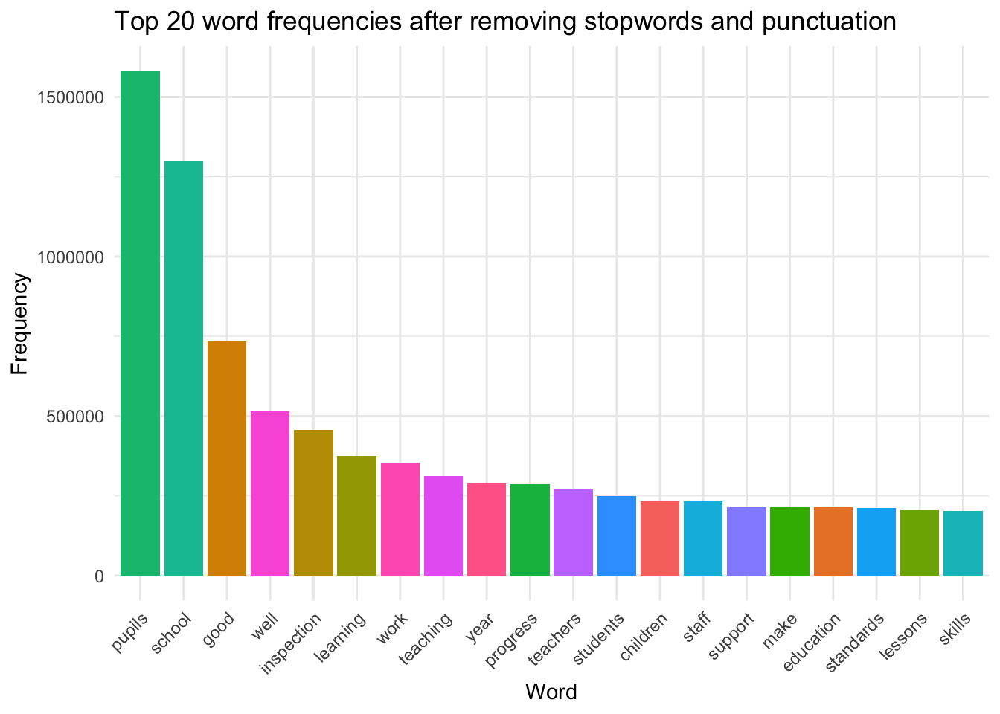
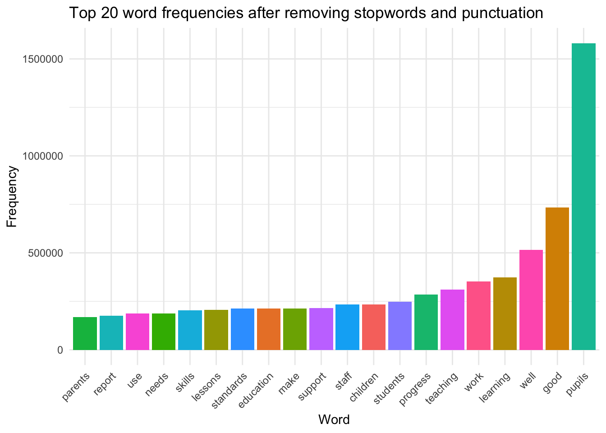
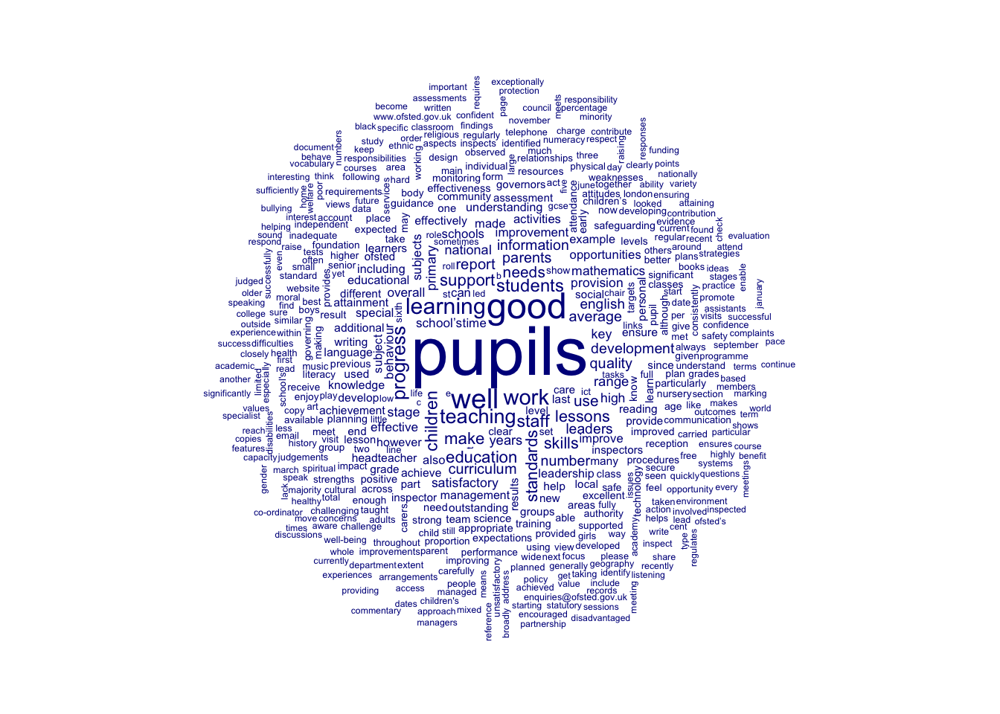
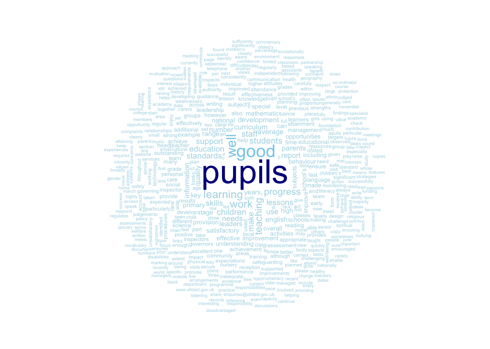
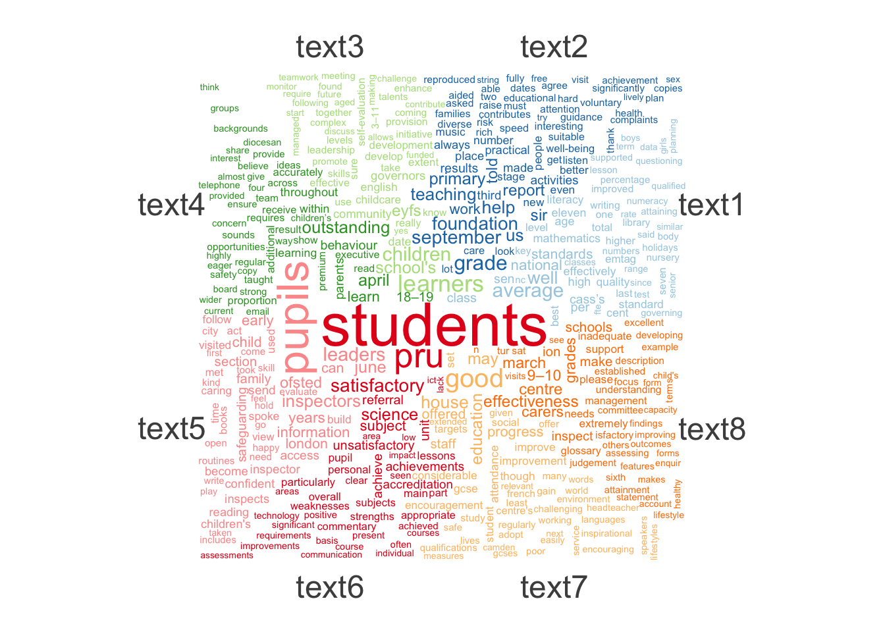
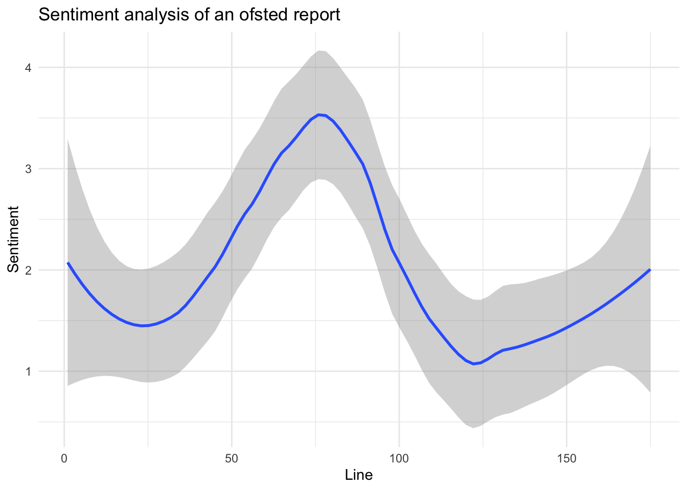

Corpus analysis is the empirical study of linguistic patterns associated with language use in different contexts, often now carried out using computer-based approaches.
1.1 Corpus Analysis in R - quanteda
One of the most widely used packages for corpus analysis in R is the quanteda package. quanteda is a comprehensive package that allows researchers to manage corpora and carry out a wide range of analyses on them. To install quanteda, use the following code, if this is the first time you are using the package you will need to include the install.packages("quanteda") function. We will also load the tidyverse package, which is a collection of packages that are commonly used in data analysis in R.
1.2 Creating a corpus
Typically, the first step in a corpus analysis project is to create a corpus object. A corpus object is a collection of texts that can be analysed together. In quanteda, a corpus object can be created from a variety of sources, including text files, data frames, and character vectors. There are a number of different approaches to reading in textual data.
1.3 The Ofsted data set
The data in this teaching page are drawn from the corpus of Ofsted reports that are freely available on the Ofsted website:
https://reports.ofsted.gov.uk/
The Ofsted website hosts reports from inspections going back to 1997, however, report banks from 1997-99 appear to be incomplete. There are reports on a range of different types of school inspections for state school primary, secondary and sixth form provision, as well as independent providers offering special school and boarding provision.
Attempts have been made to conduct corpus analysis using these reports, notably:
To extract the Ofsted corpus, we have used the rvest package to scrape the Ofsted website for all providers and all reports linked to each provider. Once we had collected this data, we used it to download each of the 163,706 reports in pdf format. Each of these pdfs was then read into R using the pdftools package, which extracts the text from the pdf files. The corpus file linked below holds all accessible reports from 1997 to April 2025 in a text format.
Number of Ofsted reports by year and phase of education
Attempts have been made to extract grades, dates, head teacher’s names and genders, inspectors’ names and gender, and map provider information to DfE GIAS records to provide context on school type (e.g. selective, boys only etc).
All reports from the Ofsted website are available under the Open Government Licence. The data set linked below is also under the same licence.
Data linked below is free to use and aims to provide a data set where you can conduct your own analysis, similar to that offered by firms such as watchsted. We haven’t bench marked our data set against commercial data sets, but if you do find any issues with it, please do let us know.
1.4 Loading the pre-made Ofsted corpus
We have produced several data sets around the Ofsted corpus that can be used for corpus analysis. The two main data sets are:
ofsted_reports_txt_full.parquet [download] (~2.2 GB) raw text including punctuation, e.g. new lines
ofsted_reports_txt_full_lower.parquet [download] (~2.0 GB) all text lower case with punctuation removed
type of inspection - full, curriculum, short, etc.
grade
ofsted grade, where applicable
gender
all boys, all girls, mixed
phase_of_education_name
primary, secondary etc
sch_type
school type - secondary modern, grammer, independent, special etc
la_name
name of local authority
gor_name
name of region
easting
map coordinates
northing
map coordinates
urban_rural_name
whether school is urban or rural
number_of_pupils
size of school (2025)
percentage_fsm
% of students on FSM (2025)
inspector
lists of inpectors along with gender
Additionally, we have data sets that include the gender of the head teachers and the inspectors:
ofsted_heads.parquet [download] (~2 MB) head teacher names, titles and guessed gender
inspector_stats_from_text.parquet [download] (~1.5 MB) stats on inspectors for each inspection, including: number of inspectors, number of HMIs, gender split, gender of lead inspector
Tip
To find the path to a file:
On a PC: hold Shift and right-click the file or folder, then select “Copy as Path” from the context menu.
On a Mac: hold down the Option key and right-click the file or folder, then select “Copy as Pathname” from the context menu.
To load the data, first download the files linked above into a folder. Loading the files can take a lot of compute power, so only attempt the below if you have 16GB of RAM and not much else running on your machine:
Now we have the data loaded, you can start to run some analysis on it, try the following questions
Which year had the largest number of “outstanding” grade reports? Can you work this out as a percentage of all reports with grade is not equal to “other”?
How many “full” inspections were there in 2020, compared to 2019 and 2021? How many of these were for “Primary” and “Secondary” schools?
full inspections 2019,2020,2021
ofsted_data %>%filter(type =="full", year %in%c(2019, 2020, 2021)) %>%group_by(year) %>%summarise(n =n())
full inspections 2019,2020,2021, by phase
# by phase of educationofsted_data %>%filter(phase_of_education_name %in%c("Primary", "Secondary"), type =="full", year %in%c(2019, 2020, 2021)) %>%group_by(year, phase_of_education_name) %>%summarise(n =n())
How do the number of primary full inspections correlate with the number of secondary full inspections across years? Work out a correlation co-efficient (BONUS: can you plot this?)
The tidyverse includes the stringr package, which provides a set of functions for working with strings in R. For example, you might want to track the number of reports that mention the word “shakespeare”. To do this we can use the str_detect function, which checks if a string contains a certain pattern and returns TRUE if it finds it, or FALSE if it doesn’t.
Warning, this can take a long time to run, so you might want to try it on a subset of the data first, e.g. ofsted_data %>% filter(year == 2020).
This seems rather low, with only 16 mentions, but maybe it’s because we’re looking for “shakespeare” with a lower case “s”, we need to search for mentions of shakespeare with lower and upper case ‘s’. We can do this using the OR command, which is |, surrounded by square brackets to indicate that we are looking for either a lower or upper case “s”.
But our search is not just subject to the poor proof checking of some Ofsted report writers, there is ongoing debate over how the Eternal Bard spelt his own name, even his gravestone (Shakspeare) differs from his wife’s (Shakespeare). So how can we tell how how mentions of Shakespeare are in the Ofsted corpus? Through regular expressions, or regex, that’s how. We might consider the following spellings of Shakespeare:
shakespeare
shakspeare
shakspere
shakespare
And we can put together a longer string with the | separating each option, which means “or” in regex:
This has picked up another two mentions of Shakespeare! But this is already starting to get a bit cumbersome, and what if we want to find “shakespearean” and other uses fo the word? We can see a few patterns about the different names:
the words of interest start with “shakesp” or “shaksp”, no other words will do
This returns an extra 60 reports. We’ll cover regular expressions in more detail below.
1.6.1 Questions
How many references are there to Tolkien in the Ofsted corpus? How many reports mispell Tolkien’s name?
Tolkien mentions
# ofsted inspectors are almost as likely to mispell Tolkien's name than to spell it correctlyofsted_data %>%mutate(tolkien =str_detect(text, "[t|T]olkien")) %>%select(year, phase_of_education_name, tolkien) %>%ungroup() %>%summarise(n =sum(tolkien))# 165ofsted_data %>%mutate(tolkien =str_detect(text, "[t|T]olkein")) %>%select(year, phase_of_education_name, tolkien) %>%ungroup() %>%summarise(n =sum(tolkien))# 106ofsted_data %>%mutate(tolkien =str_detect(text, "[t|T]olkin|[t|T]olken|[t|T]okien|[t|T]okein")) %>%select(year, phase_of_education_name, tolkien) %>%ungroup() %>%summarise(n =sum(tolkien))# 6 some bad spelling, but not that bad
How do mentions of the word “equity” compare to mentions of the word “equality” in the Ofsted corpus? How many reports mention both words?
Compare counts of mentions of the term behaviour in primary and secondary school reports. You will want to use the phase_of_education_name variable to compare primary and secondary schools. How many reports spell behaviour wrong?
Search for another item of interest, how does this change over the years? Share this with the person next to you
We might also want to extract the text that contains the word “shakesphare”, is it just a spelling mistake or something that merges maths and English. We can do this using the str_extract function, which extracts the first occurrence of a pattern from a string, and the .{10} which matches 10 characters each side of the matched string. WARNING: this can be incredibly slow when working on the whole data set.
# the actual url is: https://files.ofsted.gov.uk/v1/file/763955ofsted_data %>%filter(year ==2000) %>%mutate(matches =str_extract(text, ".{10}Shakesphere.{10}")) %>%filter(!is.na(matches)) %>%pull(matches)
[1] "ossary of Shakesphereian words "
For more information about regex see this great blog post Baby got backreferences which gives a great introduction to regex (using song lyrics as examples!)
2 Using quanteda to do some analysis
The previous analysis is a bit rough and slow. To do faster, better structured corpus analysis we can use the quanteda package. quanteda is a powerful package for managing and analysing text data in R. It provides a range of functions for creating, manipulating, and analysing corpora, as well as for visualising the results.
To use quanteda, you first need to create a corpus object from your text data. This can be done using the corpus() function, which takes a character vector or a data frame as input. The code below shows how to create a corpus object from the ofsted_data data frame.
Once the text files have been read in as text, they need to be converted to a format quanteda can work with. This is done using the corpus function. The code below shows how to convert the ofsted_data object to a corpus object, you must have your corpus text in a column called text. You can think of a corpus like a library of the documents you are using in your project.
# Converting a text file to a corpus objectofsted_corpus <-corpus(ofsted_london %>%ungroup() %>%select(text, type, grade, phase_of_education_name))
2.1 Basic analysis in quanteda
Once you have created a corpus object, you can carry out a range of analyses on it. The quanteda package provides a wide range of functions for analysing corpora. A first step is getting some summary descriptive statistics related to your corpus. The code below shows how to get a summary of the corpus object.
# A simple descriptive summary of the corpussummary(ofsted_corpus)
Corpus consisting of 18800 documents, showing 100 documents:
Text Types Tokens Sentences type grade phase_of_education_name
text1 1895 10041 431 full other Primary
text2 594 1612 63 full good Primary
[ reached 'max' / getOption("max.print") -- omitted 98 rows ]
You can see that {quanteda} has used the “text” column of ofsted_data to construct TextTypesTokensSentences. Types and tokens refer to different ways of counting the unique and total words in a corpus:
Tokens: This refers to the total number of words (or word-like units) in the corpus, including repetitions. Each individual occurrence of a word, regardless of whether it appears elsewhere in the corpus, counts as a token. Types: This refers to the number of unique words in the corpus, disregarding any repetitions. A type is counted only once, no matter how many times it appears in the text. Sentences: An attempt to work out the number of sentences in each test, using punctuation delimiters
the corpus command has also kept the data from the other columns, e.g. typegradephase_of_education_name, this is now metadata about your corpus objects. You can add further metadata by using the docvars function. The code below shows how to add the number of speakers to the ofsted_corpus object. Note that you must define a vector with the same number of items in it as there are documents in your corpus:
# Adding metadata to the corpusdocvars(ofsted_corpus, "urn") <- ofsted_london$urnsummary(ofsted_corpus)
Corpus consisting of 18800 documents, showing 100 documents:
Text Types Tokens Sentences type grade phase_of_education_name urn
text1 1895 10041 431 full other Primary URN: 100000
[ reached 'max' / getOption("max.print") -- omitted 99 rows ]
To view an individual corpus text you can use the as.character function. This will show you the text in the corpus object. Be careful, this can produce a long output! Note the \n in the text, this is a newline character.
# gives the text of the third documentas.character(ofsted_corpus[3])
If you want to filter the corpus, you can use the corpus_subset function. This function allows you to filter the corpus object based on the metadata you have added. The code below shows how to filter the ofsted_corpus object to only include schools grade “satisfactory”.
# Creating a new corpus which contain good schools ofsted_corpus_good <-corpus_subset(ofsted_corpus, grade =="good")summary(ofsted_corpus_good)# We can also extract the docvars from the corpus object, this is useful for getting the metadata about the corpusdocvars(ofsted_corpus, "grade")
2.2 Tokenising the corpus
Now we have a corpus object we need to define the tokens that we are going to be studying. Tokens are units of analysis, for corpora we generally use words as tokens, but you can also use phrases, punctuation or sentences. The quanteda package provides the tokens() function to convert a corpus object into a tokens object:
You can see that each document is now a vector of words, these are the tokens.
We can now start to interrogate these tokens using the kwic - key words in context - function. This allows you to search for a word or phrase in the corpus and see the context in which it appears.
The code below shows how to use the kwic function to search for the word “teacher” in the ofsted_tokens object. The pattern argument is used to specify the word or phrase you want to search for and ou can use the window= argument to set how many tokens either side of the keyword you want to see. Here we have set the window to 5.
The kwic command allows patterns that are regular expressions if we add the parameter valuetype = "regex", for example we might want to look at all tokens that start (^) with the word “shakesp”, e.g. shakespeare, shakesperian, shakesphere(?!), etc. Note: kwic is case_insensitive by default meaning it’ll pick up upper and lower case text.
kwic(ofsted_tokens, pattern ="^shakesp", valuetype ="regex", window =5,case_insensitive =TRUE) # set this to FALSE to be case sensitive.
Keyword-in-context with 824 matches.
[text46, 346] help pupils learn and perform |
[text56, 6341] working on a version of |
Shakespearian | plays They also deliver training
Shakespeare’s | Midsummer Night’s Dream and of
[ reached 'max' / getOption("max.print") -- omitted 822 rows ]
Tip
For more information on regular expressions, see the R documentation.
The following symbols can be useful in
Pattern
Description
.
Any single character except a newline
^
Beginning of String (or Line)
$
End of String (or Line)
[]
A set of characters, e.g., [a-z] for lowercase letters
[^]
Negation inside square brackets, e.g., [^a-z] for non-lowercase letters
()
Grouping (capturing group), used for subpatterns
*
0 or more of the preceding element
+
1 or more of the preceding element
?
0 or 1 of the preceding element (optional)
{n}
Exactly n occurrences of the preceding element
{n,}
n or more occurrences of the preceding element
{n,m}
Between n and m occurrences of the preceding element
b
Word boundary (matches between word and non-word characters)
B
Not a word boundary
A
Beginning of the string (similar to ^ but anchors the start of the whole string)
Z
End of the string (similar to $ but anchors the end of the whole string)
\1, \2, …
Backreference to capturing groups, e.g., \1 refers to the first captured group
(?=…)
Positive lookahead (assertion, matches a position only if the pattern inside matches)
(?!…)
Negative lookahead (assertion, matches a position only if the pattern inside does not match)
(?<=…)
Positive lookbehind (matches if preceded by a pattern)
(?<!…)
Negative lookbehind (matches if not preceded by a pattern)
[:alpha:]
Any letter
[:lower:]
Any lowercase letter
[:upper:]
Any uppercase letter
[:digit:]
Any digit (equivalent to
[:alnum:]
Any letter or number
[:xdigit:]
Any hexadecimal digit
[:punct:]
Any punctuation character
[:graph:]
Any letter, number, or punctuation character
[:space:]
A space, a tab, a new line, etc. (equivalent to )
For example: - the regex ^mini will match any word that starts with “mini”. - the regex able$ will match any word that ends with “able”. - the regex colou?r matches both “color” and “colour”. - the regex [J|j]ane matches both “Jane” and “jane”.
Note that you can output the result of kwic search to a data frame and then use ggplot to represent the data. You’ll note that this raises some issues about the cleanliness of the data, as many words are joined on an apostrophe '
# Doing a key word in context search wtih regex and plottingshakespeare_search <-kwic(ofsted_tokens, pattern ="^shakesp", valuetype ="regex", window =5,case_insensitive =TRUE)ggplot(shakespeare_search, aes(x = keyword, fill = keyword)) +geom_bar() +theme_minimal() +labs(title ="Occurrences of 'shakespeare' in Ofsted corpus") +xlab("keyword") +theme(legend.position ="none") +theme(axis.text.x =element_text(angle =45, hjust =1))

# if you're missing the metadata, you can add it back in using the `docvars` functionshakespeare_search_meta <- shakespeare_search %>%as_tibble() %>%mutate(id =as.numeric(str_extract(docname, "\\d+")),grade =docvars(ofsted_tokens, "grade")[id],phase =docvars(ofsted_tokens, "phase_of_education_name")[id] )ggplot(shakespeare_search_meta, aes(x = keyword, fill = keyword)) +geom_bar() +theme_minimal() +labs(title ="Occurrences of 'shakepeare' in Ofsted corpus, by stage") +xlab("keyword") +theme(legend.position ="none") +theme(axis.text.x =element_text(angle =45, hjust =1)) +facet_wrap(grade~., scales ="free_y")

Sometimes we want to create tokens on a phrase level, as we are interested where words appear together, for example we might be looking for information on “assessment for learning” in schools:
Keyword-in-context with 87 matches.
[text97, 7395:7396] Assessment The day to day |
[text97, 7417:7418] in appropriately planned future learning |
formative assessment | for children under the age
Formative assessment | which informs further planning is
[ reached 'max' / getOption("max.print") -- omitted 85 rows ]
Tip
An alternative way to represent where words occur in a text is to use the str_view function from the stringr package, which highlights matches:
library(stringr)# Read in lyrics of Bohemain Rhapsody from Githuburl <-"https://gist.githubusercontent.com/matematikaadit/3a513cc5fe6ebb9565ee1584e2b4f00d/raw/"file_content <-readLines(url)str_view(file_content, "poor")
[10] │ I'm just a <poor> boy, I need no sympathy,
[45] │ I'm just a <poor> boy, nobody loves me.
[46] │ He's just a <poor> boy from a <poor> family,
2.2.1 Questions
Using just the tokens from reports for schools in London [download]:
Make a data frame of the five tokens that come after the token “behaviour” (kwic is case insensitive) in London Ofsted reports
Find all sentences that include to age groups like “11–16”
age group mentions
ofsted_london_tokens %>%kwic(pattern ="11[–]16", valuetype ="regex", window =5) %>%as.data.frame() # or to match those 'like' thisofsted_london_tokens %>%kwic(pattern ="\\b\\d{1,2}[–-]\\d{1,2}\\b", valuetype ="regex", window =5) %>%as.data.frame()
Find another word or phrase of interest in the Ofsted corpus, and plot the results
2.3 Word frequencies
A common corpus analysis technique is to examine the frequency of words in the corpus. We can do this using a document-feature matrix (DFM), which allows you to see the frequency of words in the corpus. {quanteda} provides the dfm() command to create a dfm object, to use this we pass the tokens object.
Then the featfreq function is used to get the word frequencies. Note you can output the output to a dataframe using as.data.frame() which will allow further processing and use with other packages such as ggplot to make graphs.
library(gt)# Create a document-feature matrix (DFM)dfm_london <-dfm(ofsted_london_tokens)# Get word frequenciesword_frequencies <-featfreq(dfm_london)# Convert to dataframeword_frequencies_df <-as.data.frame(word_frequencies)word_frequencies_df %>%mutate(feat =rownames(word_frequencies_df)) %>%head(10) %>%gt()
word_frequencies
feat
455756
inspection
174792
report
1246
sir
5126
john
106
cass’s
44115
foundation
133494
primary
1300525
school
2134
city
2680691
of
A useful feature is to be able to add a grouping variable when doing word counts. For example, we can group by file, using the dfm_group() function.
library(quanteda.textstats)# get the available document variablesprint(docvars(ofsted_london_tokens))
file year month day name urn reports urls closed_link closed_name type
grade gender phase_of_education_name age sch_type la_name gor_name easting
northing urban_rural_name number_of_pupils percentage_fsm inspector
[ reached 'max' / getOption("max.print") -- omitted 18800 rows ]
# Create a document-feature matrix (DFM) grouped by transcript dfm_london <-dfm(ofsted_london_tokens) %>%dfm_group(groups = grade)# Get word frequencies with a groupingword_frequencies <-textstat_frequency(dfm_london, groups = grade)
2.4 Cleaning transcripts
In some contexts, before analysis, you may want to clean the text. This can involve removing punctuation, numbers, and other non-word characters. As we saw above, the tokens function has a remove_punct argument that can be set to TRUE to remove punctuation. We can also remove words that are frequent but probably not very interesting, such as “i”, “me” , “my”, “myself”, “we”, “our”, “ours”, “ourselves”, “you”, and “your”. These common, high frequency words known as stopwords, and quanteda has a built in dictionary of stopwords for you to remove.
You can see those included by running head(stopwords("en"), 20) the 20 limits the ouput to the first 20 words. Here en specifies you are interested in stopwords in English.
To remove stopwords, you can use the remove argument in the tokens function: tokens_remove(tokens, stopwords("en")). The code below shows how to create a new tokens object with stopwords and punctuation removed. Let us compare outputs with and without the removal of stopwords and punctuation.
# removing stopwords and punctuationofsted_tokens_no_stop <- ofsted_tokens %>%tokens_remove(stopwords("en"))# Get word frequencies# Create a document-feature matrix (DFM)dfm_df_no_stop <-dfm(ofsted_tokens_no_stop)# Get word frequenciesword_frequencies_no_stop <-featfreq(dfm_df_no_stop)# Convert to dataframeword_frequencies_no_stop_df <-as.data.frame(word_frequencies_no_stop)word_frequencies_no_stop_df %>%mutate(feat =rownames(word_frequencies_no_stop_df)) %>%head(10) %>%gt()
word_frequencies_no_stop
feat
455756
inspection
174792
report
1246
sir
5126
john
106
cass’s
44115
foundation
133494
primary
1300525
school
2134
city
33570
london
We can compare the results of the two word frequency lists to see the impact of removing stopwords.
# graphs of frequencies before and after removing stopwordsword_frequencies_df_top <- word_frequencies_df %>%mutate(feat =rownames(word_frequencies_df)) %>%arrange(desc(word_frequencies)) %>%slice_head(n =20)ggplot(word_frequencies_df_top, aes(x =reorder(feat, - word_frequencies), y = word_frequencies, fill = feat)) +geom_bar(stat ="identity") +theme_minimal() +labs(title ="Top 20 word frequencies before removing stopwords") +labs(x ="Word", y ="Frequency")+theme(legend.position ="none") +theme(axis.text.x =element_text(angle =45, hjust =1))

word_frequencies_no_stop_df_top <- word_frequencies_no_stop_df %>%mutate(feat =rownames(word_frequencies_no_stop_df)) %>%arrange(desc(word_frequencies_no_stop_df)) %>%slice_head(n =20)ggplot(word_frequencies_no_stop_df_top, aes(x =reorder(feat, - word_frequencies_no_stop), y = word_frequencies_no_stop, fill = feat)) +geom_bar(stat ="identity") +theme_minimal() +labs(title ="Top 20 word frequencies after removing stopwords and punctuation") +labs(x ="Word", y ="Frequency") +theme(legend.position ="none") +theme(axis.text.x =element_text(angle =45, hjust =1))

The built in functions for removing punctuation and stop words are not always ideal. You may want to create your own list of words to remove or use a different method to remove them. You can also use the tokens function with the remove argument to remove specific words. The code below shows how to remove the word “teacher” (and others) from the ofsted_tokens object.
# custom removal of words# Create a custom list of stop wordscustom_stopwords <-c("cass", "cass's", "teachers", "teacher", "year", "inspection", "john", "school")ofsted_tokens_no_stop <- ofsted_tokens %>%tokens(remove_punct =TRUE) %>%tokens_remove(stopwords("en")) %>%tokens_remove(custom_stopwords)# Create a document-feature matrix (DFM)dfm_no_stop <-dfm(ofsted_tokens_no_stop)# Get word frequenciesword_frequencies_no_stop <-featfreq(dfm_no_stop)# Convert to data frameword_frequencies_no_stop_df <-as_tibble(word_frequencies_no_stop) %>%mutate(feat =names(word_frequencies_no_stop)) ggplot(word_frequencies_no_stop_df %>%arrange(desc(value)) %>%slice_head(n =20), aes(x =reorder(feat, value), y = value, fill = feat)) +geom_bar(stat ="identity") +theme_minimal() +labs(title ="Top 20 word frequencies after removing stopwords and punctuation") +labs(x ="Word", y ="Frequency") +theme(legend.position ="none") +theme(axis.text.x =element_text(angle =45, hjust =1))

2.4.1 Creating a custom dictionary
We have seen how to search for a single word or phrase in the corpus. You may want to search for multiple words or phrases at once. This can be done using a dictionary. A dictionary is a list of words or phrases that you want to search for in the corpus. The code below shows how to create a dictionary object using the dictionary function. The dictionary function takes a list of words or phrases as input. You can use the dictionary when making a dfm to create word counts
# Setting up a dictionary to search fordict <-dictionary(list(subject =c("mathematics", "science", "history", "geography"),parents =c("mother", "father", "dad", "mum")))# searching for a phrase# Create a document-feature matrix (DFM) using the dictionary to search for wordsdfm_dict_search <- ofsted_tokens_no_stop %>%tokens_lookup(dictionary = dict) %>%dfm()# display the dfmfeatfreq(dfm_dict_search)
subject parents
245155 1256
2.4.2 Questions
Remove the stopwords from the London corpus, and remove the custom stopwords: “London”, “City”, “School”. Create a DFM and display the most common words:
Create a dictionary to search for the environmental terms: “climate change”, “global warming”, “sustainability”, “carbon footprint”, “renewable energy”, “pollution”. Use this dictionary to create a DFM and display the word frequencies.
Come up with your own dictionary of words or phrases that you are interested in, and use it to create a DFM and display the word frequencies.
2.5 Words that co-occur
2.6 Word clouds
A common way to visualise word frequencies is to use a word cloud. A word cloud is a visual representation of text data, where the size of each word indicates its frequency in the text. The quanteda.textplots package can be used to create word clouds in R.
The code below shows how to create a word cloud from the object. The text_plotwordcloud function is used to create the word cloud from a ‘dfm’ object. The dim.trim function is used to set the minimum frequency of words to include in the word cloud. If low frequencies words are left in, the word cloud is hard to read. The min_termfreq argument is used to set the minimum frequency of words to include in the word cloud (our corpus has thousands of words, so setting this to 100 will get the most commons ones). The textplot_wordcloud function is used to create the word cloud.
library(quanteda.textplots)# Get word frequencies# Create a document-feature matrix (DFM)# Trim to remove low frequency wordsdfm <-dfm(ofsted_tokens_no_stop) %>%dfm_trim(min_termfreq =100, verbose =FALSE)# Create a word cloudtextplot_wordcloud(dfm)

The argument colorcan be use to set a colour gradient by frequency.
# Create a word cloud comparing textstextplot_wordcloud(dfm, color =c("lightblue", "skyblue", "blue", "darkblue"))

The textplot_wordcloud() function has an argument to produce comparative plots by text, by setting the comparison argument to true. We also need to limit the number of documents being compared to a maximum of 8.
# Create a word cloud comparing textstextplot_wordcloud(dfm[1:8,], comparison =TRUE)

2.6.1 Questions
Create a word cloud of the words in the Ofsted corpus of outstanding schools - use a minimum count of 200. HINT: start from the beginning of the chapter and filter the ofsted_london data to only include outstanding schools, you then need to turn this into a corpus object, then a tokens object, and finally a dfm object:
Make word clouds comparing the text for outstanding, good and requires improvement schools - use a minimum count of 200. HINT: you can dfm_group to group the dfm by grade, then use the textplot_wordcloud function to create a comparative word cloud on this grouped dfm object.
grouped word cloud
outstanding_data <- ofsted_london %>%# filter for the three gradesfilter(grade =="outstanding"| grade =="good"| grade =="requires improvement")outstanding_corpus <-corpus(outstanding_data %>%# create a corpusungroup() %>%select(text, type, grade, phase_of_education_name))outstanding_tokens <-tokens(outstanding_corpus, # tokenize and remove stopwordswhat="word",remove_punct =TRUE,remove_symbols =TRUE,remove_numbers =TRUE) %>%tokens_remove(stopwords("en"))dfm_groups <-dfm(outstanding_tokens) %>%dfm_group(groups =docvars(outstanding_corpus, "grade")) # group by gradetextplot_wordcloud(dfm_groups, # plotmin_count =200, comparison =TRUE, max_words =100,color =c("darkgreen", "royalblue", "firebrick")) # specify the colours of three grades
2.7 Sentiment analysis
Sentiment analysis is a way to determine the emotional tone behind a series of words. The syuzhet package can be used to perform sentiment analysis in R. The package uses a dictionary-based approach to sentiment analysis. Words are assigned a score based on their emotional valence, with positive words having a positive score and negative words having a negative score. The scores are then aggregated to give an overall measure of the emotional tone of the text.
The package uses the NRC lexicon a list of words and their associations with eight emotions (emotions (anger, fear, anticipation, trust, surprise, sadness, joy, and disgust) and two sentiments (negative and positive). The categorisations were achieved through a crowd sourcing process. You can see some of the categorisations below:
lang word sentiment value
1 english abba positive 1
2 english ability positive 1
3 english abovementioned positive 1
[ reached 'max' / getOption("max.print") -- omitted 7 rows ]
lang word sentiment value
1 english abandon negative 1
2 english abandoned negative 1
3 english abandonment negative 1
[ reached 'max' / getOption("max.print") -- omitted 7 rows ]
lang word sentiment value
1 english aberration disgust 1
2 english abhor disgust 1
3 english abhorrent disgust 1
[ reached 'max' / getOption("max.print") -- omitted 7 rows ]
The code below shows how to perform sentiment analysis on the text of a selected Ofsted report. The get_sentiment function is used to perform sentiment analysis. The method argument is used to set the method of sentiment analysis to use.
# load text for target schooltext <- ofsted_london %>%filter(urls =="https://files.ofsted.gov.uk/v1/file/967877") %>%pull(text)# break the text into sentences to give units for analysissentences <-get_sentences(text)# Perform sentiment analysissyuzhet_vector <-get_sentiment(sentences, method="syuzhet")# convert the suzhet vector to a dataframe for more choies in plottingplot_data <-as.data.frame(syuzhet_vector)ggplot(plot_data, aes(x =1:length(syuzhet_vector), y = syuzhet_vector)) +geom_smooth(method ="loess", span =0.5) +# Span here sets the amount of damping on the linelabs(title ="Sentiment analysis of an ofsted report", x ="Line", y ="Sentiment") +theme_minimal()

# The `plot` function is used to plot the sentiment analysis results.# The `type` argument is used to set the type of plot to create.# The `main`, `xlab`, and `ylab` arguments are used to set the title and labels of the plot.
Choose an Ofsted report (or another document) and carry out a sentiment analysis
References
Bokhove, Christian, John Jerrim, and Sam Sims. 2023. “How Useful Are Ofsted Inspection Judgements for Informing Secondary School Choice?”Journal of School Choice 17 (1): 35–61.
———. 2024. “Do Schools That Employ an Inspector Get Better Inspection Grades?”British Educational Research Journal 50 (5): 2383–2406.